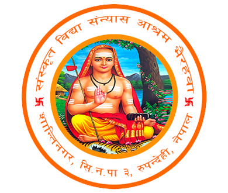

संस्कृत विद्या संन्यास आश्रम भैरहवा
सिद्धार्थनगर न.पा.-३, भैरहवा, रुपन्देही, लुम्बिनी, नेपाल
सिद्धार्थनगर न.पा.-३, भैरहवा, रुपन्देही, लुम्बिनी, नेपाल
महामृत्युंजय शिवमन्दिर, संस्कृत विद्या संन्यास आश्रम, भैरहवा एक पवित्र स्थल हो, जहाँ भगवान् शिवको महामृत्युंजय रूपमा आराधना गरिन्छ। यस मन्दिरमा भगवान् शिवलाई आशुतोषको रूपमा पूजा गरिन्छ, जसको अर्थ "शीघ्र प्रसन्न हुनेवाला" हो। भक्तजनहरू भगवान् शिवलाई सादगीपूर्ण पूजा अर्चनाका साथ स्मरण गर्छन्, विश्वास गर्छन् कि शिव शीघ्रै प्रसन्न भई आफ्नो कृपा प्रदान गर्छन्। मन्दिरमा नियमित रूपमा रुद्राभिषेक, हवन, तथा आरती जस्ता अनुष्ठानहरू सम्पन्न गरिन्छन्, जसले भगवान् शिवको कृपा प्राप्त गर्न भक्तजनहरूलाई प्रेरित गर्दछ। यहाँ आउने भक्तजनहरू भगवान् आशुतोषसँग आफ्नो मनोकामना व्यक्त गरेर शान्ति र समृद्धिको आशिर्वाद प्राप्त गर्छन्।
| प्रातःकालीन | समय |
|---|---|
| ढोका खुल्ने | ४:३० बजे |
| रुद्राभिषेक | ५:०० बजे |
| आरती | ५:४५ बजे |
| भोग | ९:३० बजे |
| ढोका बन्द | १०:०० बजे |
| सायंकालीन | समय |
|---|---|
| ढोका खुल्ने | ४:०० बजे |
| पूजा | ५:०० बजे |
| आरती | ६:०० बजे |
| नैवेद्य वितरण | ६:३० बजे |
| विश्राम | ७:३० बजे |
नोटः मन्दिरको समयसारिणी ऋतुअनुसार परिवर्तन हुन्छ ।